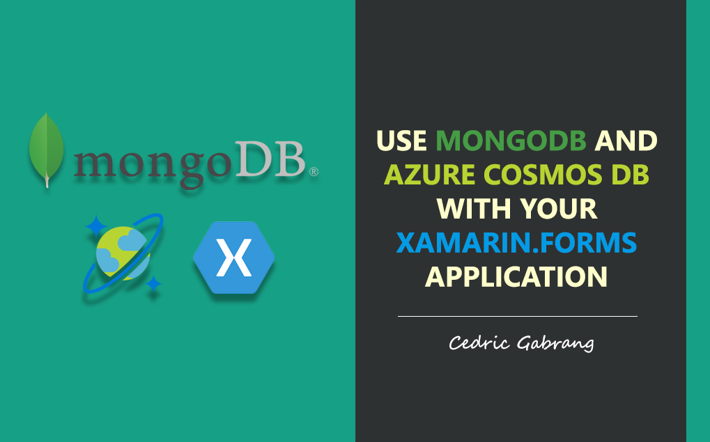
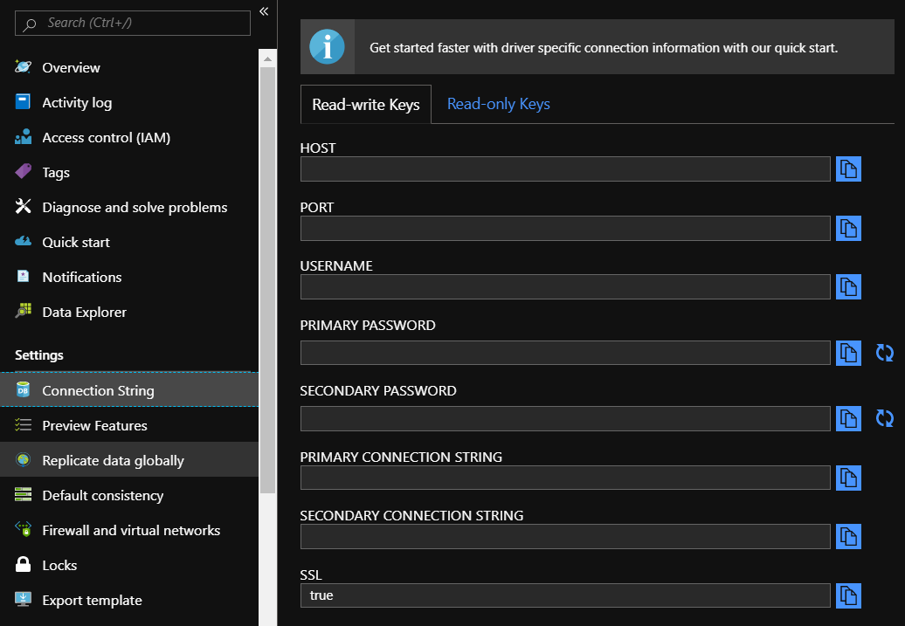
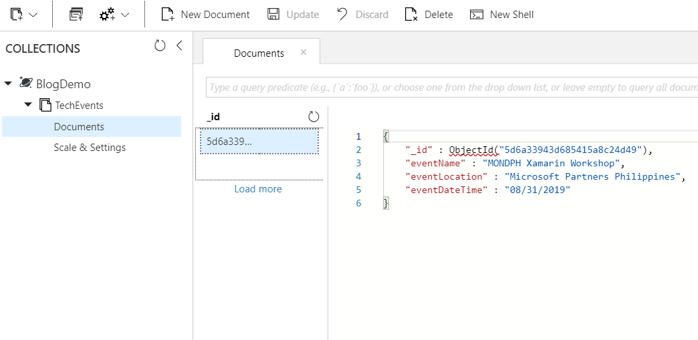

Use MongoDB and Azure Cosmos DB With Your Xamarin.Forms Application
by Cedric Gabrang • Aug 31st 2019

Recently, I've attended a 2-day blockchain seminar + workshop and I found it interesting especially on how it deals with data storing. Well, we're not going to talk about blockchain or bitcoin stuffs right here. I just got caught with the fact that blockchain technology uses MongoDB as their database system and with that, I wondered if MongoDB could be also integrated with Xamarin.Forms.
Now, on this blog, we're going to talk about on how to create your Xamarin app using MongoDB. We’ll query data using LINQ, insert, and delete data.
Let's get started.
What is MongoDB?
"The database for modern applications", as www.mongodb.com stated on their official site, is a general purpose, document-based, distributed database built for modern application developers and for the cloud era. MongoDB is classified as a NoSQL database program, which means, it is a document database and stores data in JSON-like documents but use a variant called Binary JSON (BSON) that accommodates more data types and it has been popular in the Node.js community for a while. Instead of using tables and rows as in relational databases, the MongoDB architecture is made up of collections and documents.
By using the Azure Cosmos DB's API for MongoDB, you can enjoy the benefits of the MongoDB you're used to.
What is Azure Cosmos DB?
Azure Cosmos DB is a fully managed cloud database. With just a few clicks you can configure a database that is 100% compatible with the MongoDB. It implements wire protocols of common NoSQL databases. By providing a native implementation of the wire protocols directly and efficiently inside Cosmos DB, it allows existing client SDKs, drivers, and tools of the NoSQL databases to interact with Cosmos DB transparently. Despite the popularity of MongoDB for Node.js solution, a fully supported and maintained driver for .NET exists. The driver is implemented in .NET Standard which means it is compatible with multiple platforms, including Xamarin.
Set Up the Environment
For this demo, our MongoDB will be hosted in Azure Cosmos DB. First, to get your instance of Azure Cosmos DB set up and ready to use, sign in your Microsoft account to Azure Portal. Go to Azure Cosmos DB blade and click on the Add button.

In the Create Azure Cosmos DB Account page, enter the settings for the new Azure Cosmos DB account. Select Review + Create. You can skip the Network and Tags section. The account creation takes a few minutes.

Connect to MongoDB
Next, our app needs to connect to the MongoDB. First, we have to obtain our connection string. In the left pane, click Connection String. The Connection String blade opens, it has all the information necessary to connect to the account by using a driver for MongoDB, including a preconstructed connection string.

Let's create our app!
The MongoDB.NET library enables the communication between Xamarin apps and the MongoDB. Search for MongoDB.Driver using the NuGet Package Manager in Visual Studio or Visual Studio for Mac and
add that library to all of your projects.
Now, let's create our collection. On this demo, let's use Technical Event sessions as our sample collection. To do that, create a class and name it TechEventsModel and the following attributes:
[BsonId, BsonRepresentation(BsonType.ObjectId)]
public string Id { get; set; }
[BsonElement("eventName")]
public string Event { get; set; }
[BsonElement("eventLocation")]
public string Location { get; set; }
[BsonElement("eventDateTime")]
public string When { get; set; }
The [BsonId] attribute specifies which property on the class should be used as the unique key or identifier for that document.
Next, let's create a ViewModel class named TechEventsViewModel and inherit the
INotifyPropertyChanged interface. Initialize the following variables as indicated below:
class TechEventsViewModel : INotifyPropertyChanged
{
public event PropertyChangedEventHandler PropertyChanged;
static IMongoCollection mongoCollection;
readonly static string dbName = "BlogDemo";
readonly static string collectionName = "TechEvents";
static MongoClient client;
private List<TechEventsModel> _techEventsList;
private TechEventsModel _techEventItem;
private string _location, _event, _when;
protected virtual void OnPropertyChanged(string propertyName)
{
PropertyChanged?.Invoke(this, new PropertyChangedEventArgs(propertyName));
}
}
To read and write documents, our app will use the IMongoCollection<T> class. Use the MongoClient object to obtain a reference to the IMongoDatabase.
Let's now set up our connection and create our database and collection. Create a public IMongoCollection<T> property named MongoConnection.
public IMongoCollectionMongoConnection { get { if (client == null || techEventsCollection == null) { var connectionString = "[PLACE YOUR CONNECTION STRING HERE]"; MongoClientSettings settings = MongoClientSettings.FromUrl( new MongoUrl(connectionString)); settings.SslSettings = new SslSettings { EnabledSslProtocols = SslProtocols.Tls12 }; client = new MongoClient(settings); var db = client.GetDatabase(dbName); var collectionSettings = new MongoCollectionSettings { ReadPreference = ReadPreference.Nearest }; mongoCollection = db.GetCollection (collectionName, collectionSettings); } return mongoCollection; } }
Next, let's add the following properties.
public string Event
{
get { return _event; }
set
{
_event = value;
OnPropertyChanged("Event");
}
}
public string Location
{
get { return _location; }
set
{
_location = value;
OnPropertyChanged("Location");
}
}
public string When
{
get { return _when; }
set
{
_when = value;
OnPropertyChanged("When");
}
}
public List<TechEventsModel> TechEventsList
{
get { return _techEventsList; }
set
{
_techEventsList = value;
OnPropertyChanged("TechEventsList");
}
}
On the same class, create a method named GetAllTechEvents. To add every document in our collection list looks like the following:
public async void GetAllTechEvents()
{
var allEvents = await MongoConnection
.Find(new BsonDocument())
.ToListAsync();
TechEventsList = new List<TechEventsModel>();
TechEventsList.AddRange(allEvents);
}
It is important to query asynchronously to avoid blocking the UI thread and provide a better user experience.
On the other hand, let's have the InsertTechEvent method. Inserting data looks like this:
var items = new TechEventsModel
{
Event = Event,
Location = Location,
When = When,
};
await MongoConnection.InsertOneAsync(items);
await Application.Current.MainPage.Navigation.PopAsync();
For us to have atleast 1 collection before we proceed, go to GetAllTechEvents method and apply the changes as indicated below:
public async void GetAllTechEvents()
{
var allEvents = await MongoConnection
.Find(new BsonDocument())
.ToListAsync();
if (allEvents.Count == 0)
{
var items = new TechEventsModel
{
Event = "MONDPH Xamarin Workshop",
Location = "Microsoft Partners Philippines",
When = "08/31/2019"
};
await MongoConnection.InsertOneAsync(items);
allEvents = await MongoConnection
.Find(new BsonDocument())
.ToListAsync();
}
TechEventsList = new List();
TechEventsList.AddRange(allEvents);
}
All MongoDB services seems ready, let's have these services in use by creating a page to display the Tech Events collections list. Create a ContentPage named TechEventsListPage. Our page should like this:
<ContentPage.Content>
<ListView ItemsSource="{Binding TechEventsList}"
CachingStrategy="RecycleElement">
<ListView.ItemTemplate>
<DataTemplate>
<TextCell Text="{Binding Event}" Detail="{Binding Location}">
</TextCell>
</DataTemplate>
</ListView.ItemTemplate>
</ListView>
</ContentPage.Content>
Let's indicate our BindingContext in our TechEventsListPage.cs
protected override void OnAppearing()
{
base.OnAppearing();
BindingContext = new TechEventsViewModel();
}Let's run it!
As you've noticed, we just simply fetched the collection from Azure Cosmos DB. Now, let's take a look on how it was saved.
